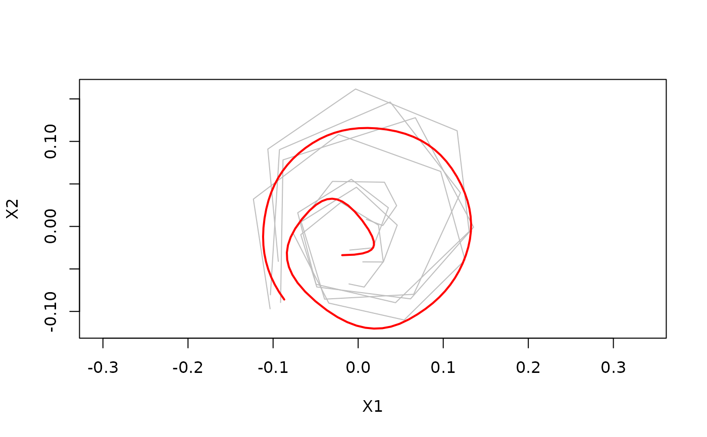

Compute an elastic full Procrustes mean for a collection of curves
compute_elastic_shape_mean.RdComputes an elastic full Procrustes mean for curves stored in data_curves.
Constructor function for class elastic_shape_mean.
Arguments
- data_curves
list of
data.frames with observed points in each row. Each variable is one coordinate direction. If there is a variablet, it is treated as the time parametrization, not as an additional coordinate.- knots
set of knots for the mean spline curve
- type
if "smooth" linear srv-splines are used which results in a differentiable mean curve if "polygon" the mean will be piecewise linear.
- penalty
the penalty to use in the covariance smoothing step. use '-1' for no penalty.
- var_type
(experimental) assume "smooth", "constant" or "zero" measurement-error variance along t
- pfit_method
(experimental) "smooth" or "polygon"
- smooth_warp
(experimental) controls the weighting of original and smoothed observations over the iterations, if pfit_method == "smooth".
- eps
the algorithm stops if L2 norm of coefficients changes by less than
eps- max_iter
maximal number of iterations
- verbose
print iterations
- cluster
(experimental) use the parallel package for faster computation
Value
an object of class elastic_shape_mean, which is a list
with entries
- type
"smooth" if mean was modeled using linear srv-splines, "polygon" if constant srv-splines
- coefs
spline coefficients
- knots
spline knots
- variance
sample elastic shape variance
- data_curves
list of
data.frames with observed points in each row. First variabletgives the initial parametrization, second variablet_optimthe optimal parametrization when the curve is aligned to the mean. Has the attributes 'rotation', 'scaling', 'translation' and 'dist_to_mean'. Useget_procrustes_fitto get the elastic full Procrustes fit.- fit
see
fit_mean
Examples
curve <- function(t){
rbind(t*cos(13*t), t*sin(13*t))
}
set.seed(18)
data_curves <- lapply(1:4, function(i){
m <- sample(10:15, 1)
delta <- abs(rnorm(m, mean = 1, sd = 0.05))
t <- cumsum(delta)/sum(delta)
data.frame(t(curve(t)) + 0.07*t*matrix(cumsum(rnorm(2*length(delta))),
ncol = 2))
})
#randomly rotate and scale curves
rand_scale <- function(curve){ ( 0.5 + runif(1) ) * curve }
rand_rotate <- function(curve){
names <- colnames(curve)
theta <- 2*pi*runif(1)
mat <- matrix(c(cos(theta), sin(theta), -sin(theta), cos(theta)), nrow = 2, ncol = 2)
curve.rot <- as.matrix(curve) %*% t(mat)
curve.rot <- as.data.frame(curve.rot)
colnames(curve.rot) <- names
return(curve.rot)
}
data_curves <- lapply(data_curves, rand_scale)
data_curves <- lapply(data_curves, rand_rotate)
#compute smooth procrustes mean with 2 order penalty
knots <- seq(0,1, length = 11)
elastic_shape_mean <- compute_elastic_shape_mean(
data_curves,
knots = knots,
type = "smooth",
penalty = 2
)
plot(elastic_shape_mean)
